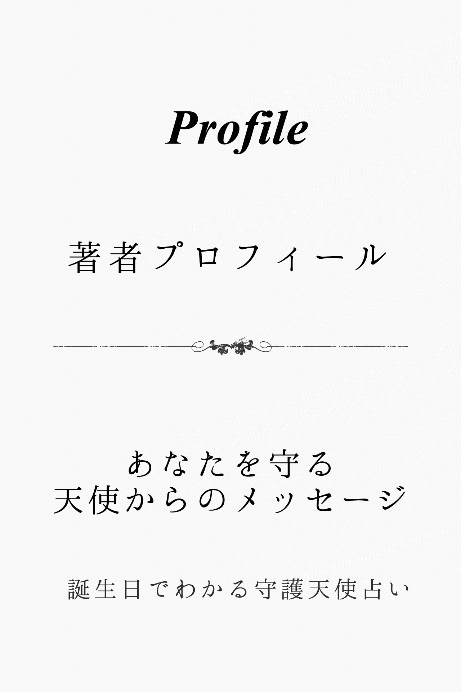
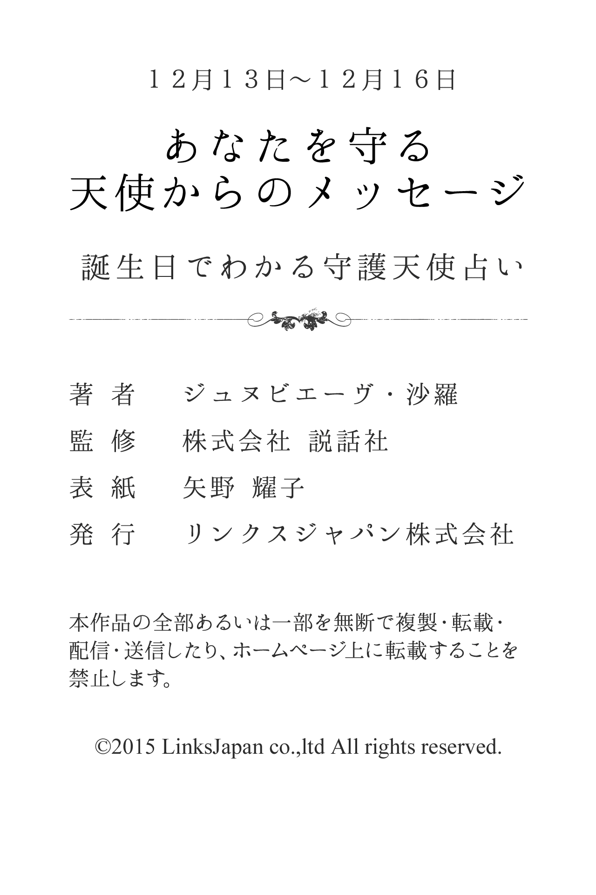

| １２月１３日～１２月１６日生まれ あなたを守る天使からのメッセージ 誕生日でわかる守護天使占い (得トク文庫) | |
| ジュヌビエーヴ・沙羅 | |
| (2015) | |

1 、はじめに
「何かに、あるいは誰かに守られている......」
あなたは、そんなふうに感じたことはありませんか？
たとえば、限定発売のお菓子を購入しようと長い行列に並び、最後のたった１つを運良く購入できたり、学生の頃、授業で順々に答えなければいけなくなり、「あー、どうしよう！ 全然わかんないよ」と青ざめて固まっていると、先生があなたを指名しようとした瞬間、終了のベルが鳴り響いたり......
そんなほほえましいエピソードをもつ人もいれば、九死に一生を得るような重大事に遭遇して、心から「助かった！」と安堵のため息をもらした経験を持つ人もいるかもしれません。
そんなとき、あなたが何かに守られているような気がするのは、実は決して気のせいだけではないのです。なぜなら、それは守護天使のおかげだからです。
有名な神学者であり哲学者でもあるトマス・アクィナスは、『すべての人々に、クリスチャンであれ、それ以外の人であれ、たとえ大罪人であっても、あらゆるすべての人々に、決して離れることのない守護天使がついている』と記しています。
そう、守護天使とは、人が生まれてから死ぬまでの一生の間、その人と深く結びつき、保護し、そばにいてくれる天使のこと。あなたの心をより良い方向へと導くために霊感を送り込み、幸せな人生を送るための手助けをしてくれる神秘的な存在です。
さらに、それぞれの守護天使には、固有のキャラクターや得意な守護分野があります。したがって、あなただけを守ってくれる守護天使をよく知り、その言葉に耳を傾けることで、よりあなたらしく生きることができ、真実の幸せの形が見えてくることでしょう。
沙羅

2 、第１章 守護天使のささやき
★あなたの恋愛傾向
小天使ナナエルに見守られているあなたは、感性豊かな人です。感覚的な恋愛を大切にする人なので、楽しみたいという純粋な気持ちから、自由奔放に人を愛していくでしょう。ただし、自分の気持ちに素直に恋愛をするので、遊び人というレッテルを貼られてしまうかもしれません。自分にとって当たり前の行動でも、相手には裏切りとなってしまいます。精神的に結びつくことができる異性となら、誠実な愛を育てていけるでしょう。
★好きなタイプと嫌いなタイプ
あなたは、熱烈に愛してくれる、情熱的な人が好みのタイプのようです。恋愛にも日常生活においても、楽しむことに積極的な人を求めています。ただし、愛情表現が苦手な人や、遊ぶことにマメでも、表面的なつき合いしかしない人は好みではありません。
★最も好むセクシャルな雰囲気
あなたは、官能的なセックスを楽しみたいと思い切りセクシーに迫られると、しつこいぐらい燃え上がるはずです。甘い音楽や香りのするムードにセクシャルなものを感じやすく、すぐ、その気になってしまうでしょう。
★運命の出会いはどんな人？
あなたの運命の人は、とても情熱的で、愛情表現が上手な人でしょう。人を愛することに純粋だといえ、大切な人には本音でぶつかってくる熱い人だといえます。日頃から人生を楽しみたいという考え方をもち、遊びも恋もハッピーでいたいという前向きさをもっています。
★運命の出会いが与える影響力
運命の出会いがあなたに与える影響力は、精神的な面に表れるでしょう。自分の感情に従って、ある意味、自由な恋愛をし、時にはトラブルや泥沼に陥ることもあるあなた。しかし、この出会いにおいては、ただ一人を愛し、信頼の絆を結ぼうとするはずです。上辺や楽しいだけの恋愛ではなく、愛し愛されることの喜びに目覚めことでしょう。そんなあなたの内面が充実することによって、自ずと外面的な魅力も増してきます。
★結婚後の変化
結婚後もあなたは相変わらず、恋に恋する人のままでしょう。そのため、理想と現実とのギャップに少々とまどうかもしれません。毎日、ラブラブなだけでは生活は成り立たず、単調な家事の繰り返しにマンネリを感じてしまうことがあるでしょう。また、パートナーに依存し過ぎて、うんざりされてしまう可能性もあるので、仕事でも趣味でも外に自分自身の世界をもって、バランスをとる必要がありそうです。子供ができると、溺愛して子離れできなくなる可能性があります。
★好きな恋のシチュエーション
あなたの好きな恋のシチュエーションは、自分の思いどおりにものごとが展開しているときでしょう。感性豊かなあなたは、感情のおもむくまま行動する人で、楽しみたいという純粋な気持ちから自由奔放に人を愛します。相手を好きだと見初めたら行動に移さずにはいられず、たとえ本命の相手がいたとしても、それは変わらないでしょう。明るく楽しくがモットーであり、お互いがハッピーでいられる、そんな純粋で単純ともいえるシチュエーションが大好きなのです。
★どんな人を選べばうまくいく？
あなたは、熱烈に愛してくれる、情熱的なパートナーを選ぶといいでしょう。そうすれば、いつもラブラブで、幸せを実感できるはずです。また、日常生活を楽しむことに積極的な人なら、刺激的な毎日を過ごせることでしょう。反対に、愛情表現が苦手な人だと、あなたがもの足りない気持ちになってしまうかもしれません。ただし、遊ぶことにマメでも、表面的なつき合いしかしないパートナーとは、深い絆を結ぶことができないでしょう。本音でぶつかってくる、善良な人であることも、重要なポイントとなるはずです。
★イメージチェンジのアドバイス
あなたは、元気で明るい雰囲気を演出してみるといいでしょう。肌を露出するときは、できるだけ健康的に見えるように、カジュアルなファッションにすると効果的です。メイクやヘアスタイルは、自分らしさを活かすような、ナチュラルな感じがおすすめでしょう。
★あなたが恋に感じる幸せ
感受性豊かなあなたは、相手が毎日マメに愛情表現してくれることに、大きな喜びを感じます。甘い言葉をささやいたり、ベタベタとスキンシップをするのではなく、思いやりのこもった態度で十分幸福になれるはずです。たとえば、朝二人でコーヒーを飲みながら、セックスの余韻に酔うといったことで、幸せを実感するでしょう。また、あなたは精神的な結びつきを大切にするタイプなので、相手が本音を打ち明けてくれると、うれしい気分になります。
★求めているものは何？
恋人関係になったら、あなたは相手にマメさを要求するでしょう。大げさな愛情表現やベタベタしたスキンシップは好まないタイプですが、ちょっとした気づかいをとても喜び、そして、要求します。たとえば、旅先からは電話やメールだけではなく、絵葉書を出すようなやさしさが、あなたの気持ちをときめかせるでしょう。

3 、第２章 大天使の恋予言
★どうすれば幸福な恋を獲得できる？
あなたを守護していてくれる大天使アニエルは、「神の優美」とも呼ばれ、あなたに美しさとやさしさを与えてくれているはずです。また、あなたが恋愛において危機に陥ったときや、思い悩んだときは、そっとアドバイスを与えながら、守ってくれることでしょう。あなたが幸福な恋をつかみ取るには、香りのおしゃれを楽しむといいでしょう。アニエルの加護を得ることができます。また、自分の香りを決めて、バスや部屋、外出するときにつける香りまで統一すると、さらに幸運度がアップします。
★あなたのセックス傾向
セックスは、あなたにとって幸福感や満足感、快楽といった、恋愛においても、そして生きる上でも重要な要素になります。ですから、いくら愛し愛されてもセックスにもの足りなさを感じる相手とは長続きしない傾向にあるようです。テクニックに関しても貪欲であり、さまざまな知識とともに経験もあることでしょう。快楽の追求もさることながら、もちろん愛情の確認といったこともセックスに求めていますから、時には大胆に激しく、時には繊細なプレイをします。
★あなたが捨てるべき性のこだわり
あなたは、基本的に、いつでもどんなところでも盛り上がることができます。ただし、特に遊び心いっぱいの雰囲気や場所に案外、こだわる傾向があるようです。身体のつながりも大切ですが、内面的なつながりを疎かにしないように心がけましょう。
★運命の出会いの瞬間
あなたにとっての運命の出会いは、それほど真剣な雰囲気がなく、たまたまアプローチしてきた人と親しくなるという状況でしょう。あなたからすると相手は特別、好みでなく、「ただ何となく......」という感じでしょうが、やがて、その内面のすばらしさに気がついていくということになります。
★あなたが与える愛の特徴
あなたは、明るく華やかな愛を相手に与えてあげることができるでしょう。あなた自身、恋をすることによって外見はもちろん内面にも磨きがかかり、それが交際にも反映しますから、毎回、何らかの刺激のある楽しいデートを展開できます。そんな二人は、周囲にもうらやましがられるようなカップルとして見られ、相手も鼻が高く、満足感を味わえるはずです。また、陽気で楽しいだけではなく、やさしさや思いやりといった面においても、喜びを与えてあげられるでしょう。
★運命の出会いを無駄にしないために
あなたが運命の出会いを成就させるためには、まず、安易な考え方を捨てるべきです。せっかくの出会いを、他の異性との関わりや遊びなどで壊してしまいかねません。それは、あなたの内側にある自惚れが表に出たためであり、ある意味、努力を怠っていることでもあります。なりゆきに任せるのではなく、自ら率先してこの出会いを活かすべく、相手との関係を大切にしましょう。他に求める楽しみを、すべて相手にさらけ出し、ぶつけていくことが最も重要なポイントになります。
★あなたの魅力と弱点
あなたの魅力は、明るく華やかな愛を、相手に与えてあげることができることになります。陽気で楽しいだけではなく、やさしさや思いやりといった面においても性的な面においても、魅力にあふれているでしょう。ただ、相手の情熱に押し切られ、さほど好きでもないのに恋際を始めてしまうといった弱点が見られるようです。時には、本当に自分がしてあげたい愛情表現ができず、かえって誤解や不安を相手に感じさせてしまうといったことがあるでしょう。
★あなたを助けてくれるのは？
あなたを助けてくれるのは、異性の友人です。自分の話を親身になって聞いてくれる人が、相談相手としてふさわしいでしょう。中でも、すでにカップルになっている友人からアドバイスをもらうことが、あなたを一番、元気づかせてくれるはずです。
★あなたが告白する場合のアドバイス
あなたが告白する場合、もって生まれたおしゃれのセンスを活かすといいでしょう。普段から相手に見せている服装とはまた違った特別なおしゃれで告白に挑めば、それだけでもインパクトを与えられるはずです。ただし、セクシーになり過ぎないことがポイントになります。遊んでいる人だと思われると、軽いおつき合いで終わってしまいかねません。また、相手に悩みや困っていることがあれば、親身になって相談にのってあげることで、真剣さをアピールしていくことも効果的です。
★あなたの恋の問題点
あなたは、異性に対して自分からアクションを起こしていくことが苦手なこともあり、相手からのアプローチをきっかけに交際が始まるケースが多いはずです。ただ、相手の情熱や勢いに押し切られて交際をスタートさせることもあり、短期間の恋に終わってしまうケースがあるでしょう。交際中は、素直な愛情表現や自分が本当にしてあげたいことが実行できず、相手に誤解や不安を与えてしまうといったことが生じるかもしれません。また、結果的に相手への愛を見つけられず、自ら「失敗した」と感じることもあるでしょう。
★幸せな恋のために、あなたが変えたほうがいい点
あなたは、異性からチヤホヤされることがあっても、しっかり相手の内面を観察することが求められます。あなた自身も内面的なものを磨き、いい加減な考えをもつ人は見抜いていくことが大切です。また、できるだけ自分からアクションを起こしていくよう変えるべきでしょう。

4 、第３章 大天使のご神託
★あなたが幸福な恋を見つけるために
あなたは、本命の人に的を絞るようにすることが大切です。アプローチしてくる人をすべて受け入れていたのでは、本当の恋を遠ざけてしまうだけになります。一番、大切な人は誰か、しっかりと考えてつき合うようにしましょう。また、それほど好きでもないのに軽々しく深い関係になったり、身体を武器にして相手を引き止めようとするのも、絶対にやめるべきです。出会いのチャンスに事欠かないあなたは、真面目に、真剣に交際しようと心がけさえすれば、愛する人と結ばれ、幸せを手に入れることができます。
★不倫関係をどう考える？
あなたは、頭の中では「不倫はいけないこと」と考えているようです。「恋愛とは愛する人と深く結ばれ、仲良く楽しい時間を過ごすもの」といった信念をもつあなたは、相手の家庭を犠牲にしてまで自分が楽しければいいと思ったりはしません。しかし、ちょっとしたタイミングに流され、知らず知らずのうちに不倫関係にのめり込んでいく危険性をもっています。特に、相手とセックスの相性がいいと、なかなか抜け出せなくなってしまうでしょう。
★あなたが不倫関係にはまってしまう理由は？
あなたが不倫関係にはまってしまう理由は、相手に自分を選んでほしいという願望が芽生えるところにあるようです。責任がなく手軽な恋愛を楽しむ傾向があるあなたには、たとえ自分に恋人がいても他の人に好意を寄せられると、天秤にかけてはいいほうを選ぶという、ずるさがあります。しかし、相手との関係は、いつものパターンとは逆で、自分が天秤にかけられている部分があるために、あなたは、つい躍起になるようです。
★あなたに相手から惹かれる理由
あなたが相手に惹かれた本当の理由は、周囲から人気のある人だったからかもしれません。常に話題の中心にいて、華やかな雰囲気を身にまとうあなたを、何とか自分だけのものにしたいという願望が、相手の中に芽生えたのでしょう。しかし、実際にあなたと話をしてみると、周囲で言われるほど遊び好きでも異性関係が派手というわけでもなく、実に気さくでお人好しな人であることに気づき、ますます好意を抱いたようです。
★あなたの悪い癖
異性からのアプローチで恋が始まるケースが多いあなたは、興味本位でおつき合いを始めたり、楽なほうへ流されたりと、恋に対して無責任なところが悪い癖です。つき合っている人との関係が、つまらないと感じたとたんに、あっさりと切り捨ててしまう面もあるでしょう。また、本命の恋人がいても、他の人から好意を寄せられたり、猛烈にアプローチされると天秤にかけて、ちゃっかりのり換えてしまうこともありそうです。
★あなたは結婚後、浮気をする？
あなたは、愛する人と深く結ばれ、幸福な時間を過ごすことを第一と考えるので、簡単に浮気に走るようなことはないでしょう。結婚後、浮気をする可能性はかなり低いようです。ただし、もともと異性の本能をくすぐる魅力にあふれているので、誘惑されることはあります。その結果、魔が差したように関係をもってしまうケースが考えられるでしょう。しかも、一度、味をしめると、のめり込んでしまう恐れもあります。
★あなたが結婚後に望むこと
あなたは結婚後も、周囲に冷やかされるくらいアツアツな、恋人どうしのような夫婦でいることを望むでしょう。人前でも堂々と手をつないで歩くなど、大げさなくらいに自分への気持ちを言葉や態度で表してほしいと思っているようです。また、夫婦で友人のホームパーティーに参加したり、家族でスポーツイベントに参加したりと、人が集まる場所にも積極的に出かけていく、オープンな家庭を築きたいと考えています。
★あなたは、どんな恋を求めている？
あなたは、心から愛せる相手と一緒に過ごすことこそ、人生における最高の幸せだと考えています。その意味では、いつも愛を求めていますが、愛する人が見つかれば、もちろん他の人には目もくれないでしょう。したがって、あなたが恋を求めているときは、フリーだという証拠です。恋愛のモードも高まっていると見て間違いないでしょう。アプローチを受ければ、落ちやすい状態になっているはずです。もし、ステディがいる場合は、二人の仲が危機に陥ったとき、気持ちが揺れ動きやすいようです。なお、あなたが発情モードになりやすいのは、冬から春にかけてと、晩秋の一時期になります。
★あなたの恋の終わりと始まり
あなたの恋が終わりを告げるとしたら、他の異性の出現がきっかけになるかもしれません。恋人がいながら、他の人に惹かれていくあなた。自分が信じられなくなり悩み抜いたあげく、あなたは別れを決意することになるでしょう。ただし、その異性との恋は、あまり長続きしないようです。さて、本物の恋がやってくるのは、一時の熱に浮かされた状態から冷めたときになります。しっかりとした意見と人生観をもっていて、あなたが心から尊敬でき、一緒に歩んで生きたいと思える相手が現れます。
★あなたが夢見ている恋の形
あなたが夢見ているのは、深く愛され大事にされる恋です。もちろん、自分からも多少は好きになることができなければ困りますが、自分が感じる愛情の何倍ものパワーで、相手から思われ愛されるような、そんな恋をあなたは夢見ています。そして、「ああ、愛されているんだなあ。こんなにも、大事に思われているんだなあ」ということを実感することで、あなたは恋をしている喜びを感じることができ、相手への愛情を深めることができるのでしょう。

5 、第４章 大天使のアドバイス
★どうすれば幸福な恋を獲得できる？
あなたが仕事場で株を上げる方法は、あまりささいなことで深刻にならないことです。被害妄想に陥るようなことがないよう、自分らしさををしっかりもつことを心がけましょう。そうすることで、よりあなたのやさしい面が浮上してきます。困っている人を見過ごすことができない思いやりと世話好きな人柄は周囲に好感をもたらし、評価が上がるはずです。また、見返りを考えず、人の信頼に応えていくことで、あなたの友情に厚い部分が仕事にも活かされることでしょう。
★あなたが能力を活かすためには？
あなたの能力を活かすためには、辛抱強さと節制を心がけることが大切です。やる気に満ちているのはいいのですが、なぜか優先する順番を間違うなど、せっかくのチャンスを逃がしてしまう傾向があります。それでは、いつまでも実力を発揮できないばかりか、目標からも遠のいてしまうでしょう。日頃から、信用できない情報に踊らされず、地道に勉学に励むことです。そして、絶好のチャンスを待って、全力を出し切りましょう。そのときに向けて、知識やテクニックを習得しておくことが重要なポイントになります。
★あなたは仕事と家庭を両立できる？
あなたは家庭と仕事を分けられず、両立するのは難しいタイプでしょう。仕事が充実していると家庭内にも張りが出て、家族に対しても積極的になり、円満な状態を維持する努力を惜しみません。しかし、一度、家庭に問題を抱えてしまうとクヨクヨ悩み、仕事にもその感情を引きずってしまい、無責任な対処をすることがあるかもしれません。反対に仕事の負担が重くなると、今度は家庭に逃げ場をつくるようになり、結局はどっちつかずの状態になりがちなので注意すべきでしょう。
★あなたにピッタリの職業
あなたにピッタリの職業は、誰かの役に立てるような職種です。たとえば、洋服や化粧品のアドバイザーなどのサービス業や接客業なら、美的センスも一緒に活かすことができるでしょう。人と関わることで喜びを見出すあなたは、カウンセラーや教師、福祉関係やボランティアでも活躍し、満足感を得られます。また、タレントや政治関係など、話術が必要とされる分野でも能力を発揮できそうです。企業内の仕事なら、人事関係の業務がおすすめでしょう。

6 、エピローグ
ここで紹介しましたのは、９の大天使の元にそれぞれ８の小天使が存在するというヒエラルキーとグループ構造をもとに占う、ヨーロッパにおいては最も親しまれている「守護天使占い」です。
有名人やスポーツ選手に限らず、あなたの周囲にも、「持ってる」と感じられる人が、きっといるのではないでしょうか。その「持ってる」とは、秀でた才能だったり、華々しい個性だったりするケースもあれば、ここぞというときにパワーを発揮できる勝負強さや、チャンスをモノにする力だったり、皆の視線をひとりじめしてしまう磁力のような魅力や驚異的な実行力だったりするケースもあるでしょう。
いずれにせよ「持ってる」人は、何か不思議なパワーに守られているように見えるはずです。その不思議なパワーこそ、実は守護天使というパワーなのです。
そして、自分の守護天使を知り、守護天使に出会った今日からは、あなたも「持ってる」人の仲間入りを果たしたのです。守護天使の恩恵を、守護天使の慈愛を、あなたもめいっぱい感じて、「持ってる」人生を謳歌してください。
沙羅
7 、著者プロフィール
ジュヌビエーヴ・沙羅
8 月10 日北海道函館市生まれ。女性誌、書籍の編集を経て、占術家に転身。西洋占星術や四柱推命を初めとして、夢占い、タロット占い、紫微斗数占いと幅広く占術を研究。
●著作
「四柱推命恋愛運」（実業之日本社）
「幸運・不運が一目でわかる夢占い」（ナツメ社）
「幸せを呼ぶパワーストーン」（実業之日本社）
「愛とメタモル深層心理テスト」（実業之日本社）
「初めて作るパワーストーンアクセサリー」（ブティック社）
「とっておきの星占い」（ナツメ社）ほか、多数。
